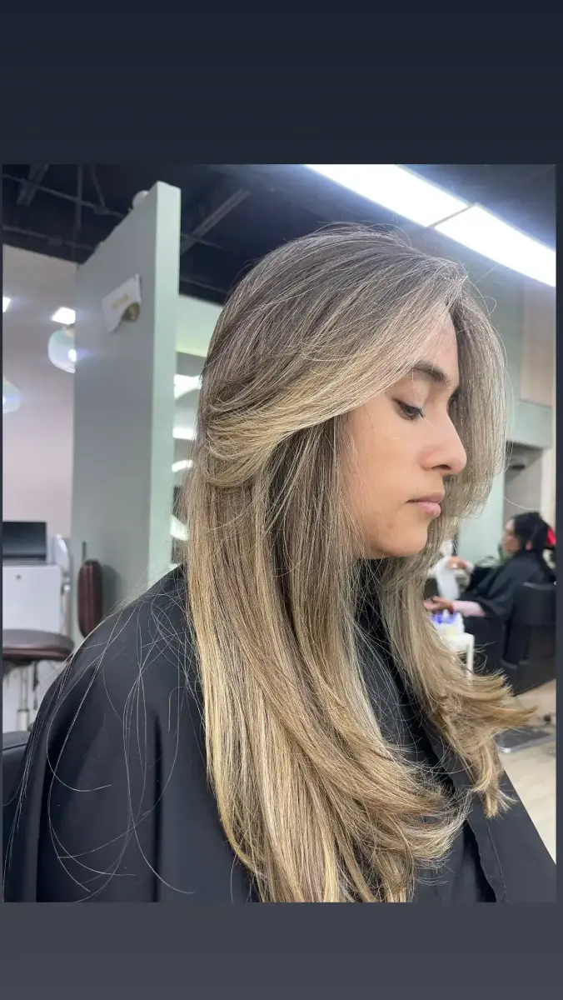
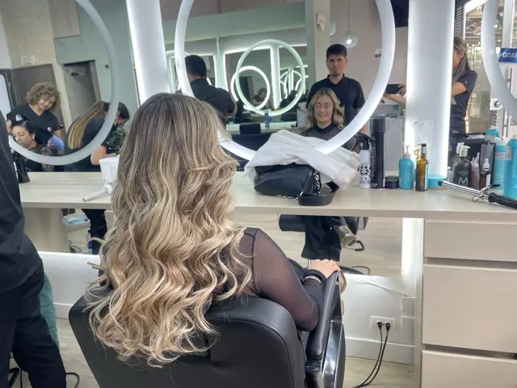
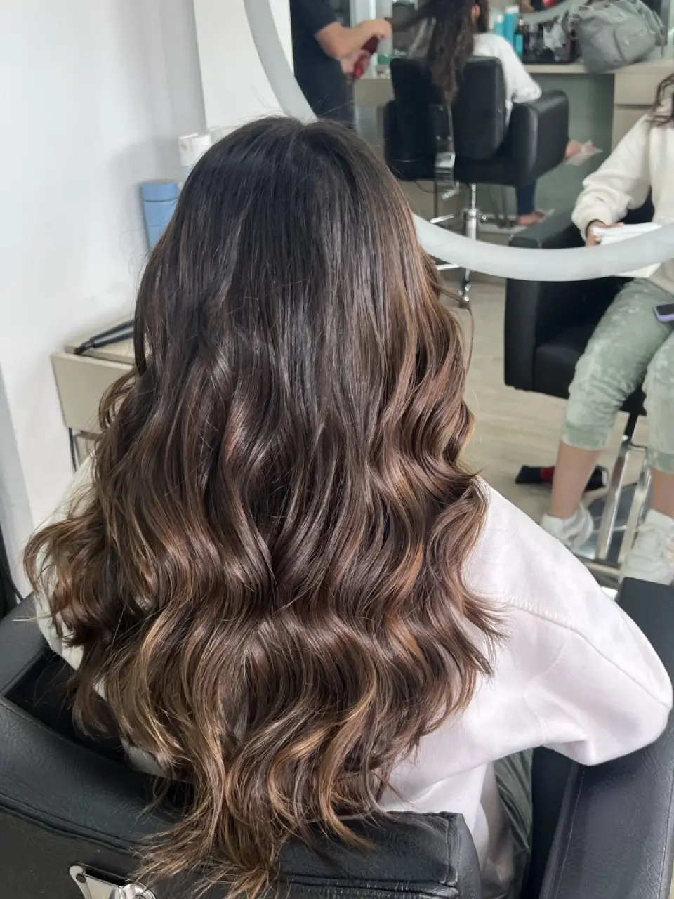
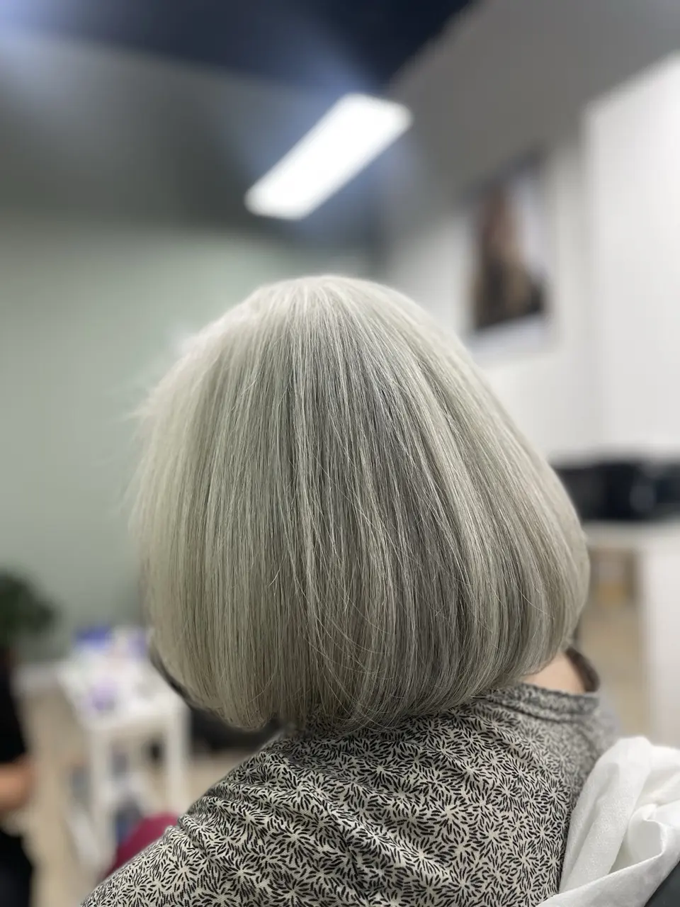
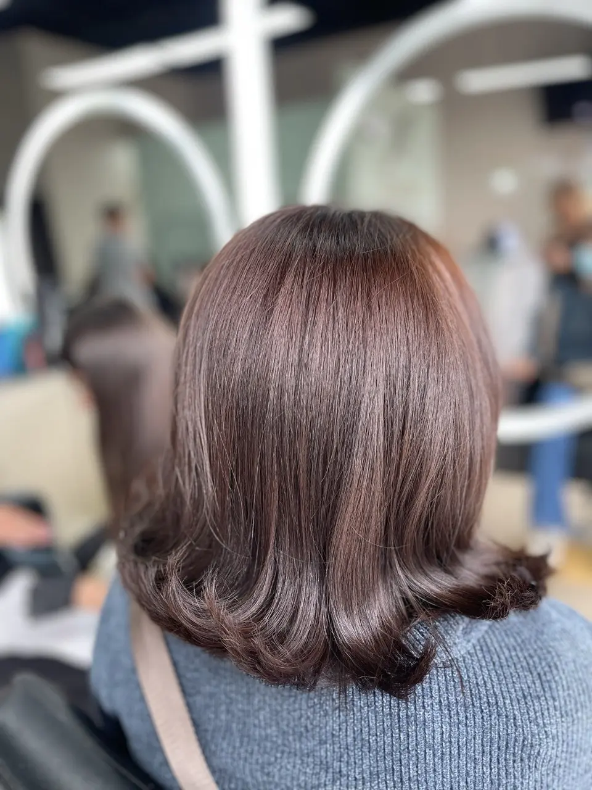

Tinturas y Color en Chía
Coloración profesional, cobertura perfecta de canas y tonos vibrantes que cuidan tu cabello.
Expertos en Colorimetría Profesional
Ofrecemos tintes completos, retoques de raíz y cubrimiento especializado de canas utilizando tecnología Plex para proteger tu fibra capilar.

Balayage
Técnica a mano alzada para un degradado natural. Incluye decoloración, matizante y tratamiento post-color.

Babylights
Micro-mechas finas que imitan el brillo natural del sol. Ideales para dar dimensión sutil.

Tinte Global
Color uniforme de raíz a puntas. Cubrimiento 100% de canas con marcas premium.

Retoque de Raíz
Mantenimiento solo en el crecimiento. Incluye lavado spa y cepillado final.
Preguntas Frecuentes
¿Cubren las canas totalmente sin que el color se vea artificial?
Sí. Usamos técnicas de multitonalidad para devolverle al cabello sus reflejos naturales, evitando el efecto mate artificial.
¿Qué marcas manejan? ¿Tienen opciones sin amoniaco?
Trabajamos con la élite del color: **Wella, L'Oréal y Schwarzkopf**. Ofrecemos líneas premium **sin amoniaco (Inoa, Color Touch)**, ideales para cueros cabelludos sensibles.
¿Cuál es la diferencia entre Tinte Permanente y Baño de Color?
El **Tinte Permanente** modifica la estructura para cubrir canas o aclarar. El **Baño de Color** es más suave, no aclara raíz y se va lavando progresivamente; es perfecto para dar brillo y matizar.
¿Cuánto tiempo dura una cita de color completo?
Un retoque de raíz toma aprox. **1 hora y media**. Un cambio de color completo o diseño puede oscilar entre **2 a 3 horas**, incluyendo lavado spa y cepillado final.
¿Pueden corregir un color manchado o que no me gustó?
¡Sí! Somos expertos en corrección de color. Realizamos un diagnóstico previo para evaluar tu fibra y trazar un plan seguro para unificar tu tono sin maltratarlo.
¿Dónde están ubicados? ¿Están cerca de Cajicá?
Estamos en los **Bajos del hotel Ibis**, Km 2 vía Chía - Cajicá Edificio Quantum. Muy cerca de Fontanar y Centro Chía, con fácil acceso desde Cajicá.